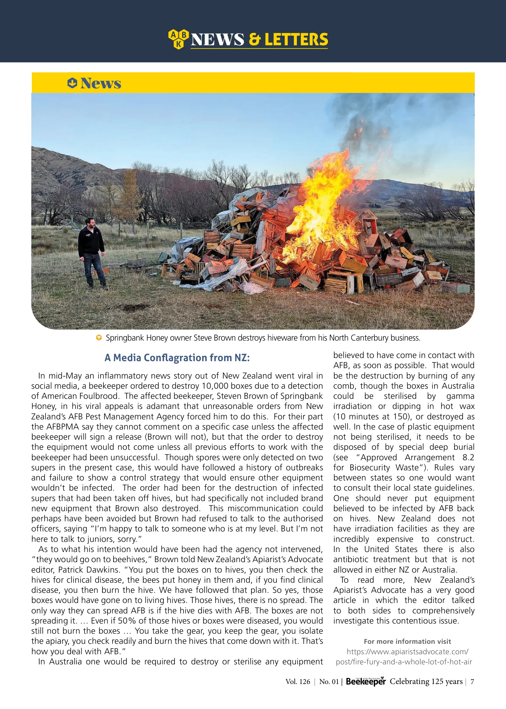

NEWS & LETTERS
Springbank Honey owner Steve Brown destroys hiveware from his North Canterbury business.
News
A Media Conflagration from NZ:
In mid-May an inflammatory news story out of New Zealand went viral in
social media, a beekeeper ordered to destroy 10,000 boxes due to a detection
of American Foulbrood. The affected beekeeper, Steven Brown of Springbank
Honey, in his viral appeals is adamant that unreasonable orders from New
Zealand’s AFB Pest Management Agency forced him to do this. For their part
the AFBPMA say they cannot comment on a specific case unless the affected
beekeeper will sign a release (Brown will not), but that the order to destroy
the equipment would not come unless all previous efforts to work with the
beekeeper had been unsuccessful. Though spores were only detected on two
supers in the present case, this would have followed a history of outbreaks
and failure to show a control strategy that would ensure other equipment
wouldn’t be infected. The order had been for the destruction of infected
supers that had been taken off hives, but had specifically not included brand
new equipment that Brown also destroyed. This miscommunication could
perhaps have been avoided but Brown had refused to talk to the authorised
officers, saying “I’m happy to talk to someone who is at my level. But I’m not
here to talk to juniors, sorry.”
As to what his intention would have been had the agency not intervened,
“they would go on to beehives,” Brown told New Zealand’s Apiarist’s Advocate
editor, Patrick Dawkins. “You put the boxes on to hives, you then check the
hives for clinical disease, the bees put honey in them and, if you find clinical
disease, you then burn the hive. We have followed that plan. So yes, those
boxes would have gone on to living hives. Those hives, there is no spread. The
only way they can spread AFB is if the hive dies with AFB. The boxes are not
spreading it. … Even if 50% of those hives or boxes were diseased, you would
still not burn the boxes … You take the gear, you keep the gear, you isolate
the apiary, you check readily and burn the hives that come down with it. That’s
how you deal with AFB.”
In Australia one would be required to destroy or sterilise any equipment
believed to have come in contact with
AFB, as soon as possible. That would
be the destruction by burning of any
comb, though the boxes in Australia
could
be
sterilised
by
gamma
irradiation or dipping in hot wax
(10 minutes at 150), or destroyed as
well. In the case of plastic equipment
not being sterilised, it needs to be
disposed of by special deep burial
(see “Approved Arrangement 8.2
for Biosecurity Waste”). Rules vary
between states so one would want
to consult their local state guidelines.
One should never put equipment
believed to be infected by AFB back
on hives. New Zealand does not
have irradiation facilities as they are
incredibly expensive to construct.
In the United States there is also
antibiotic treatment but that is not
allowed in either NZ or Australia.
To read more, New Zealand’s
Apiarist’s Advocate has a very good
article in which the editor talked
to both sides to comprehensively
investigate this contentious issue.
For more information visit
https://www.apiaristsadvocate.com/
post/fire-fury-and-a-whole-lot-of-hot-air
Vol. 126 | No. 01 |
Celebrating 125 years | 7